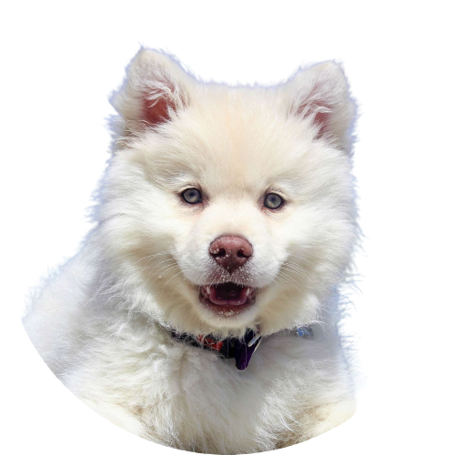
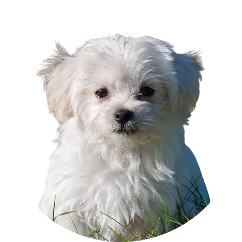

Nevado
Seus olhinhos brilhantes e sua pelagem fofa vão conquistar seu coração imediatamente. Ele é brincalhão, afetuoso e está pronto para encher sua vida de amor e diversão. Venha conhecê-lo e dê a ele um lar cheio de carinho!

Floquinho
Filhote adorável disponível para adoção! Energético, curioso e carinhoso. Pelagem macia e felpuda. Procura um lar amoroso e cheio de diversão. Pronto para derreter corações. Venha conhecer!